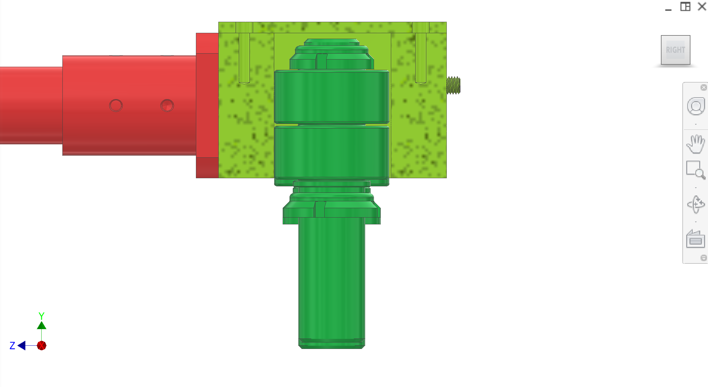
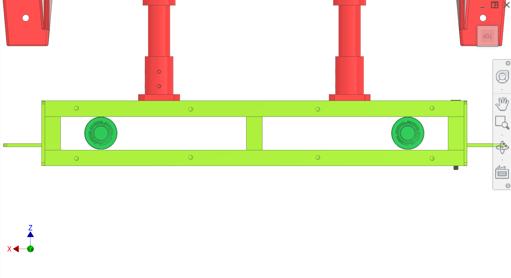
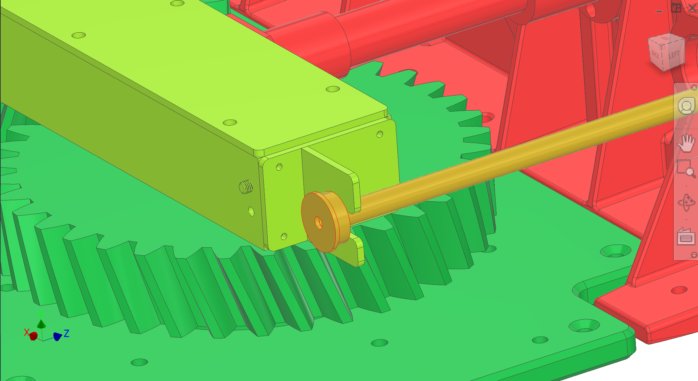
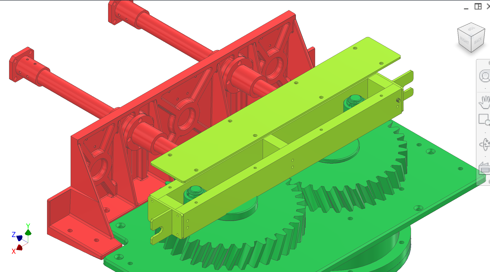

Geometria da pista do garfo, visualizações de paralelismo do eixo, engate do suporte de tração/rolha da haste e conceito de tampa superior. A discussão do projeto e as tolerâncias permanecemGarfo e eixos de transmissão.
Introdução
Esta página contémapenas figuraspara a região da pista do eixo/garfo de 35 mm. Para carregamento, seleção de rolamentos e dúvidas do empreiteiro, useGarfo e eixos de transmissão.
Figures
ConsulteFigure 1–Figura 4. (Nome do arquivoparralelismo2.pngé conforme fornecido no repo.)




Figura 1. Trilha do came do garfo - vista lateral.
1/4
Valores recomendados (claridade do contratante)
Adicionar figura: Pilha de rolamentos/eixos— explodido ou seção mostrando montagens LMF/LMK, ressaltos do eixo e folga do raspador/tampa.
Adicionar figura: Puxe o suporte + batente da haste— folga e profundidade de engate através do curso de retorno completo (suplemento Figuras 3–4).